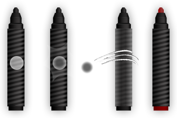
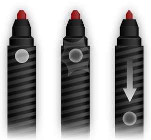
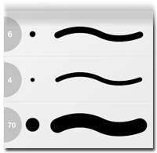
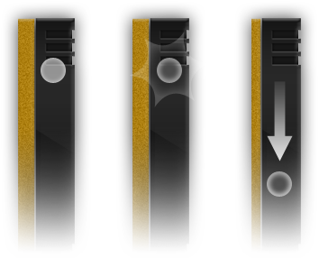

sketch your ideas quickly
iPhone 3GS, iPhone 4, iPhone 3S
iPod touch (3rd gen), iPod touch (4th gen)
IOS 3.5 or later
Marker lets you write anything and everything on the markerboard.
You can access brush thickness directly on the marker pen itself without
going to the brush panel. Marker comes with two colors, black and red.

Roll Pen
To change the color of your marker, just spin the marker towards left.
Tap Pen
Another way to change the color of your marker is by tapping on the pen’s body.
Switch either one of the options from the option panel.

Adjusting the Marker Size
The fastest way to adjust the marker size is to tap on the head and slide down finger.
Or just tap on the head will bring the brush panel, where you can adjust the brush through slider and even access the history brush.
Offset Cursor
Offset cursor will lets you offset the drawing point away from your finger tip.
This option will help you to see the starting position of the brush.

History Brushes
History will display 3 recently used brushes. It is available in the brush panel.
Eraser will erase what you have written or drawn on the markerboard,
raser brush settings and the size is available only if the eraser is selected.
Like marker eraser has its own brush panel and history brush where you can select from.

Adjust the Eraser Thickness
Adjusting the eraser size is just like the same way as the marker.
Touch the top and slide your finger down will reduce the size and sliding it up will increase the size.
you can also do manually by going to the Eraser Panel and moving the slider.
Toggle Switch for Marker and Eraser
To switch between Marker and Eraser,
use the toggle switch at the bottom left of the markerboard.
The transparency settings is controlled in the options panel.
Get Your Free Copy Today!!